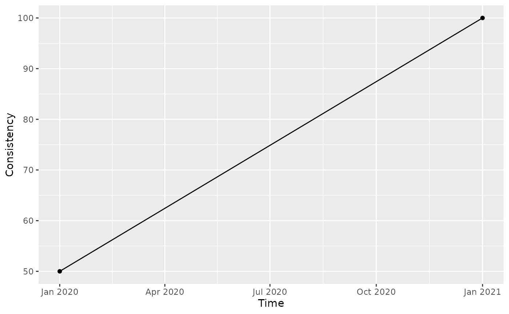

Plot consistency over time
plot_consistency_trend.RdPlots record or value consistency for each reference date, one line per group, from consistency already computed.
Usage
plot_consistency_trend(
data,
group_col = "ref_date",
type_plot = c("record", "value"),
toggle_growth = FALSE
)Arguments
- data
Data frame or lazy table (
tbl_dbi) withref_date, the column named ingroup_colandrecord_consistencyorvalue_consistency, such as the output ofcompute_record_consistency()orcompute_value_consistency()grouped bygroup_colandref_date. A lazy table is brought into memory first.- group_col
Character. Column to draw one line per group, or
"ref_date"(default) for a single line.- type_plot
Character.
"record"(default) or"value", the kind of consistency indata.- toggle_growth
Logical. Show consistency as a baseline index, with each group's first date at 100. Default
FALSE.
See also
compute_record_consistency() and
compute_value_consistency(), which compute the consistency.
Examples
hr <- data.frame(
personnel_id = c("a", "a", "b", "a"),
ref_date = as.Date(c(rep("2020-01-01", 3), "2021-01-01"))
)
hr |>
compute_record_consistency("personnel_id", group_cols = "ref_date") |>
plot_consistency_trend()
